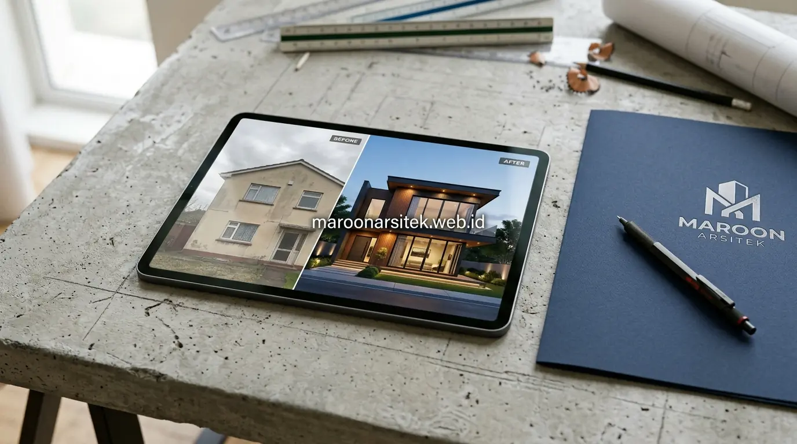

Kekhawatiran akan biaya besar dan proses pembongkaran yang melelahkan sering kali membuat pemilik rumah menunda peremajaan tampak depan rumah. Padahal, untuk menghadirkan kesan hunian baru yang modern dan elegan, Anda tidak selalu harus merobohkan dinding utama atau membongkar atap secara total. Melalui layanan jasa renovasi rumah dari Maroon Arsitek, peremajaan fasad dapat dieksekusi secara cerdas melalui modifikasi permukaan, pengaplikasian material pelapis dekoratif, dan penataan elemen pencahayaan yang tepat sasaran.
Pembaruan Fasad melalui Pengecatan dan Pemilihan Warna Baru
Pengecatan ulang dengan skema warna yang tepat merupakan cara paling efisien dalam meremajakan wajah hunian:
- Kombinasi Warna Kontemporer: Memadukan warna dasar putih tulang (*off-white*) dengan aksen abu-abu semen (*charcoal grey*) dan lis hitam matte pada bingkai jendela menciptakan kesan minimalis tropis yang bersih.
- Harmonisasi Elemen Luar: Menyelaraskan warna pintu garasi, kanopi carport, dan pagar depan agar fasad terlihat sebagai komposisi arsitektur yang utuh dan selaras.
- Teknik Colour Blocking: Menegaskan bidang dinding tertentu dengan warna lebih gelap untuk menciptakan ilusi kedalaman ruang pada fasad yang sebelumnya terlihat datar.
Pemilihan Jenis Cat sesuai Kondisi Cuaca dan Paparan Sinar Matahari
Ketahanan hasil renovasi sangat bergantung pada spesifikasi teknis cat eksterior yang diaplikasikan:
- Menggunakan cat eksterior berteknologi pelindung UV agar pigmen warna tidak cepat kusam atau mengapur akibat terpaan terik matahari iklim tropis.
- Mengaplikasikan cat elastomeric tahan air (*waterproof*) untuk menutup retak rambut dan mencegah rembesan air hujan saat musim hujan lebat.
- Penggunaan lapisan cat dasar (*sealer alkali-resistant*) wajib dilakukan guna menetralkan keasaman semen lama sebelum lapisan cat warna dipulaskan.

Penambahan Elemen Material Pelapis pada Bagian Fasad Tertentu
Memberikan sentuhan tekstur baru tanpa membongkar dinding bata eksisting:
- Panel Kayu Komposit (WPC / Conwood): Dipasang pada area balkon lantai dua atau bidang aksen teras untuk menghadirkan nuansa alami kayu yang bebas dari ancaman rayap dan pelapukan air.
- Batu Alam Tempel Presisi: Memasang batu alam andesit susun sirih atau travertine pada pilar penyangga teras guna memberikan kesan kokoh dan mewah.
- Kisi-Kisi Aluminium (Secondary Skin): Berfungsi ganda menyaring panas sinar matahari langsung ke jendela kamar sekaligus mempercantik fasad dengan estetika modern.
Kombinasi Material agar Fasad Tidak Terkesan Tempelan
Kunci keberhasilan renovasi fasad ringan terletak pada proporsi material yang harmonis:
- Batasi variasi material maksimal 2 hingga 3 tekstur berbeda agar tampak depan tidak terkesan ramai atau berat.
- Atur bidang material pelapis sebagai titik fokal (*focal point*), misalnya membingkai pintu masuk utama agar menarik pandangan setiap tamu yang berkunjung.
Penataan Ulang Elemen Eksterior Tanpa Mengubah Struktur
Menata ulang elemen pendukung di sekeliling area teras depan:
- Penggantian Desain Pagar: Mengganti teralis besi lama yang masif dengan pagar kombinasi besi hollow minimalis dan kisi kayu memberikan kesan hunian yang lebih luas dan ramah.
- Kanopi Kaca Tempered / Polikarbonat Flat: Mengganti atap seng lama carport dengan kanopi berangka baja hollow hitam dan kaca tempered transparan.
- Lansekap Taman Depan: Menambahkan *planter box* beton dengan tanaman berdaun tropis (seperti monstera atau palem mini) untuk menghidupkan suasana asri di depan rumah.
Pemilihan Elemen Kecil dengan Dampak Visual Besar
Detail akhir yang menyempurnakan transformasi fasad:
- Lampu Dinding Up-and-Down: Sorotan cahaya kuning hangat (*warm white*) ke arah dinding bertekstur menciptakan efek bayangan artistik di malam hari.
- Nomor Rumah Akrilik Kustom: Desain nomor rumah modern dengan lampu LED latar (*backlit*) menjadi sentuhan personal yang elegan.
- Handle Pintu Utama Modern: Penggantian tuas pintu klasik dengan pegangan *pull handle* panjang berbahan stainless hitam matte.